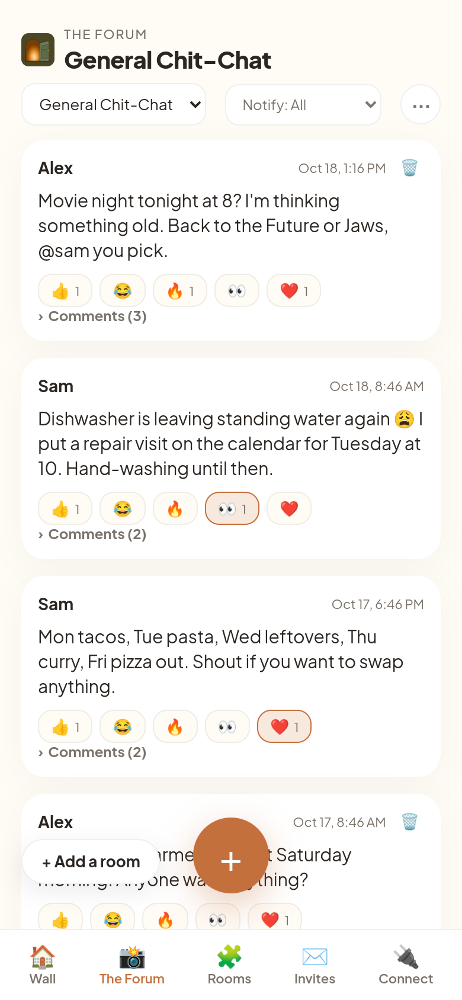
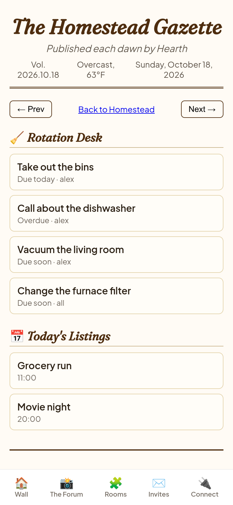
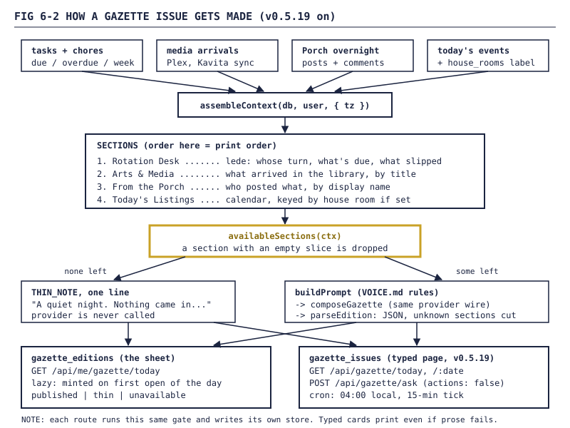
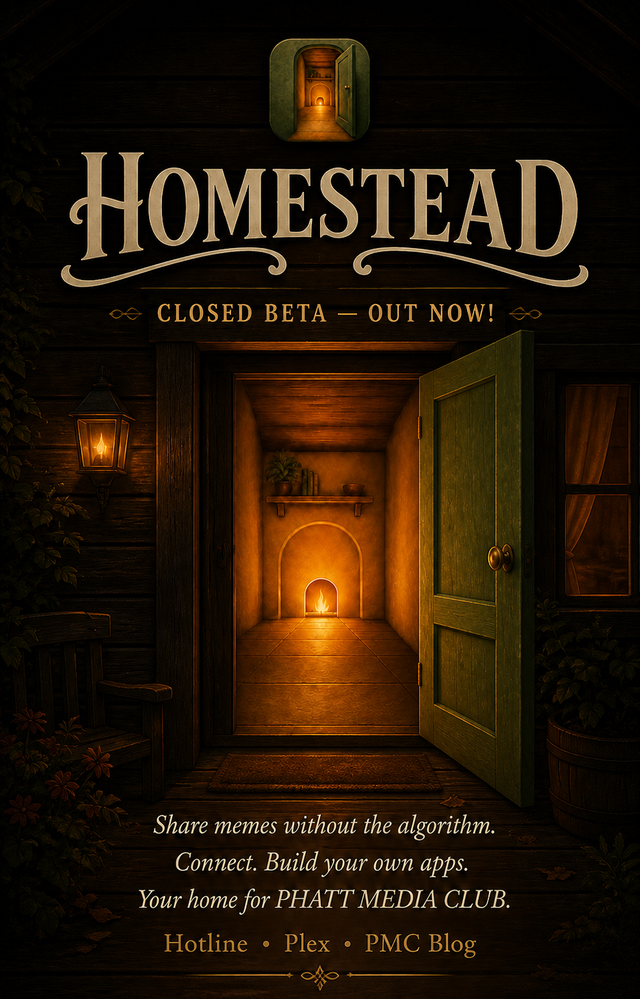
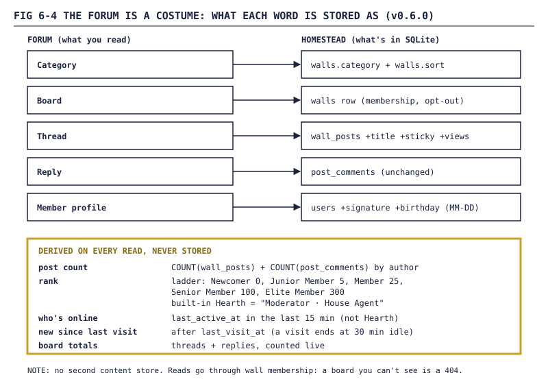
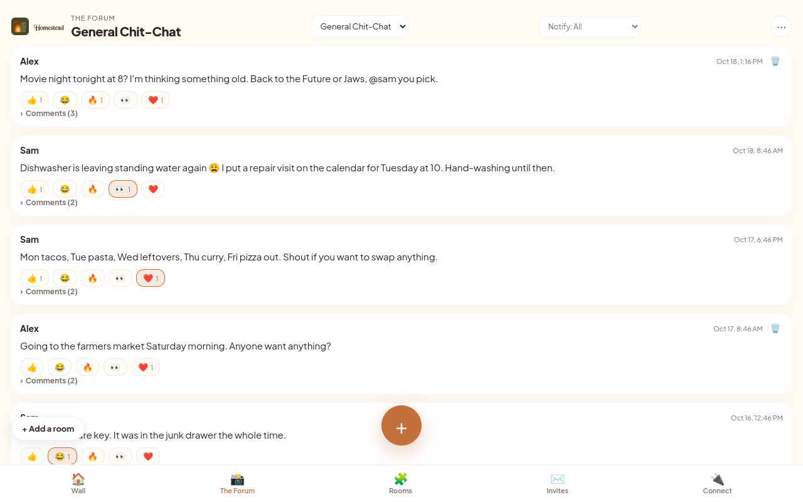

Homestead devlog, Part 6: The Gazette, the brand, and the Forum
A morning paper that refuses to pad a quiet day, a front door that finally opens, and the October call to make the Porch look like a 2006 message board.

FIG 6-0 — The Forum at/forum on v0.6.0. Demo data, users alex and sam.
Part 5 ended with agents living in the house. This part is the softer stuff: what the house reads in the morning, what it looks like, and the week in October when I decided the Porch should feel like a message board from 2006.
1. The Gazette
1.1 A module, not a perk
The Gazette, a morning newspaper about your own house, was in the July design mockups long before it had code. When an agent picked it up at the end of August, its design note was blunt:
This issue is the first line of Gazette code, full stop — treat it as new, not as finishing a wire-up.
The original plan made the Gazette a perk of the agent module. I overruled that: "users can add / remove it as a module just like everything else." So it got its own registry key and its own toggle in the add-a-room sheet. It declares requires: ['agent'] (no model, no edition), so switching the agent off while the Gazette is on hits the existing dependents_active 409. One new edge in the dependency graph, no new cascade logic.
Two things did have to change. None of the open_mode values (frame, drawer, tab) fit "full-screen, opened on demand", so there's a fourth, sheet. And user_modules had a hardcoded CHECK listing the six original keys, which SQLite can't alter in place. Instead of a one-off migration, migrate() now generates the CHECK from the registry, compares it to the stored DDL on every boot, and rebuilds the table when they disagree. As the changelog put it, the hardcoded list "was itself the drift that constraint existed to prevent."
1.2 Quiet days print small
This is the Gazette's most important rule. An empty section is never offered to the model, a section the model invents anyway is dropped on parse, and if nothing happened at all, the model is never called:
// Thin-edition floor: nothing happened at all. Print the one line
// Homestead itself owns rather than paying the harness to say
// "nothing happened" in more words.
const sections = gazette.availableSections(ctx);
if (sections.length === 0) {
const thin = gazette.putEdition(db, me.id, ctx.date, {
tz,
status: 'thin',
edition: { lede: { headline: 'Quiet', body: gazette.THIN_NOTE }, briefs: [], editors_note: null },
});
return res.json({ ...thin, cached: false, retryable: false });
}
That THIN_NOTE is the only sentence of the Gazette that Homestead writes itself:
A quiet night. Nothing came in, nothing came due, and the house kept to itself.
Other decisions from the first version (2026-08-31):
- Lazy. Generated on the first open of the day. A user who never opens it never spends a token.
- JSON, not HTML. Rendered through
esc(), so model prose never reachesinnerHTML. - Failures are cached too, but served
retryableso the sheet can offer a re-run. - No character prompt. The model gets the rules from
docs/VOICE.mddirectly ("One voice, no shifts across modules"). The register is "warm, dry, slightly amused", same as the empty Tasks list ("Nothing to do. Suspicious.").
1.3 The typed rework: a cron, back issues, and Ask
On 2026-09-05 (v0.5.19) the Gazette grew a second surface: a standalone page with a masthead, card sections and back issues.

FIG 6-1 — The Gazette page. Demo data, users alex and sam.The four sections, in print order:
| Section | What feeds it | Brief to the model |
|---|---|---|
| Rotation Desk (lede) | tasks due today, overdue, chores due this week | "Whose turn it is, what is due, what slipped." Gets the most words. |
| Arts & Media | new arrivals from the Plex/Kavita entity sync | "Name the actual titles." |
| From the Porch | overnight posts and comments on your walls | "Attribute by display name." |
| Today's Listings | today's calendar events | "Terse — this is a listings column, not prose." |

FIG 6-2 — One set of sections, one gate, two stores. The sheet and the typed page coexist; neither replaced the other.gazette_issues, one typed row per user per day. The sheet's old table stayed, and both read the sameSECTIONS, so there's one answer to "what's newsworthy".- A cron with no cron library.
jobs/gazette-daily.jsticks every 15 minutes and asks, per user, "is it past 04:00 where you are, and is today's issue missing?" The page still generates on demand, so turning the module on at lunch works. - Back issues.
GET /api/gazette/:datereturns the stored issue or a 404, no synthetic backfill. A seed script writes 28 for a demo user, thin days included. - Ask the editor.
POST /api/gazette/askgoes through the drawer's Hearth dispatch, grounded in today's issue, withactions: false. A question to your newspaper should never queue a film as a side effect.
WARNING Homestead doesn't store a timezone per user. The cron uses the timezone recorded with the user's most recent edition, falling back to UTC. The job's header comment calls this "a real limitation, not a silent guess", which is the correct amount of shame.
NOTE The masthead weather is fake.
lib/weather.jsderives plausible weather from a hash of the date and tags itsource: 'mock', so a real provider is a one-function swap later.
The typed rework also shipped a require('./jobs/gazette-daily') and a Dockerfile that didn't copy jobs/. That's Part 7.
2. Two kinds of room
Homestead already used "room" for screens in the nav. The Gazette needed the other meaning: a listing like "Kitchen: 6pm dinner" needs to know where in the house something happens. The comment in lib/house-rooms.js admits the Gazette "until now was inventing those names out of nothing."
So on 2026-08-31 house rooms became their own concept:
| Nav room | House room | |
|---|---|---|
| Answers | "which screen am I on?" | "where in the house did this happen?" |
| Stored as | the room field on a registry entry |
house_rooms rows owned by a user |
| Examples | porch, r-lists, r-calendar |
Hall, Den, Kitchen |
| Registry hook | required field | optional room_kinds: ['house_room'] (lists, calendar, chores) |
Each user owns their rooms; others can be granted read access. Hall, Den and Kitchen are offered as proposals, and nothing is written until you accept. proposals is a reserved slug, because GET /api/me/rooms/proposals is declared before /api/me/rooms/:slug and a room by that name would be unreachable forever.
On 2026-09-05 the calendar merge started joining house_rooms, and the Listings section learned to use it. The whole integration is one sentence in its brief to the model:
hint: 'Today\'s calendar, in time order. Terse — this is a listings column, not prose. ' +
'Each event may carry a `room` (a house location like Kitchen or Den) — ' +
'when present, key the listing by it (e.g. "Kitchen: 6pm dinner"); when absent, list plain.',
3. The brand: a door that opens
3.1 The brand system (v0.5.5)
The brand pass landed on 2026-08-30. The canonical logo makes the carved-wood lettering itself the wordmark ("vectorize THIS lettering"), so headers render /wordmark.svg as an image and never a typeset substitute.
It took three tries to use the right files. The first pass rebuilt the lockup from a spec and a Fraunces font. My correction was "USE THE CANONICAL LOGO AND BANNER". Half an hour later: "STILL NOT THE RIGHT ASSETS". The third pass used the canonical files as supplied.
The locked palette, from docs/brand/ASSETS.md:
| Token | Hex | Use |
|---|---|---|
--brand-olive |
#4b4624 |
door frame, dark wood |
--brand-sage |
#6d7b59 |
door panel |
--brand-paper |
#f6e4c3 |
parchment ground |
--brand-hearth |
#ad5c05 |
hearth glow |
--brand-brass |
#d49a40 |
door knob, hinge pins |
--ink |
#2B2622 |
text |
Body text stays Plus Jakarta Sans, Fraunces Italic is only for the tagline ("Your home. Your data. Your apps."), and painterly art stays off feeds and settings. Muted text went from 3.71:1 to 4.59:1 contrast to pass WCAG AA.
3.2 The door was closed
The same day, I pointed out that the icon in the live header was a flat, closed arch. The brand is an opening door. v0.5.9 rebuilt every icon from one SVG, public/icon.svg, whose header comment reads like a stage direction: "Door slab has swung OPEN outward toward viewer-right." Favicon and PWA icons all derive from it. The same release added six module icons in the same palette (the agent's is a lantern), Hearth's avatar and two teasers.

FIG 6-3 — The OUT NOW teaser. The canonical opening-door mark is derived from this poster.Then I reopened the issue: first "live on prod?", then "its not fixed everywehre". The bottom nav on / and the Porch was still six emoji. v0.5.10 swapped them for the icon and module SVGs and bumped the service worker cache from homestead-v5 to homestead-v6 so installed copies wouldn't keep the emoji offline.
That's where the asset index got its opening rule:
If you change any of these paths, update both the path here AND the consumer in the same PR — out-of-sync assets have shipped twice.
NOTE As of v0.6.0, that same file still lists the cache key as
homestead-v5.sw.jsopenshomestead-v6. The rule applies to the index too.
4. The Forum
4.1 Three mockups
In October I asked for the Porch to be the first thing anyone sees after logging in, to look like an old forum, and to be called the Forum. In my words: "This is a pure nostalgia and pure enjoyment shift in my eyes. Do 3 design proposals to me."
An agent came back on 2026-10-08 with three, each with desktop and mobile mockups:
| Option | Era | Pitch | Trade-off |
|---|---|---|---|
| A: Classic Board | phpBB2 / subSilver, ~2003 | blue-grey gradient tables, Verdana 11px, rank stars | drops the Homestead brand entirely |
| B: Woodgrain Board | vBulletin 3 in Homestead colors | carved-wood header, olive table heads, parchment rows, "What's Going On?" panel | the recommendation |
| C: Night Owl Clubhouse | ProBoards / Geocities | starfield, Comic Sans, hit counter, marquee, shoutbox | loud |
All three shared the same mapping (walls become boards, posts become threads, comments become replies) and the same furniture: Who's Online, post counts, ranks, signatures, "posts since last visit". The pitch for B was "a 2006 forum that someone in the family actually built."
I picked B, with short notes: few boards for now, because I don't know the shape yet, but keep Who's Online, the shoutbox and all the nostalgia. Two days later I added: "I want to be able to switch between the three different skins." So the frontend plan is one markup, three stylesheets, Woodgrain by default. The build was split in three: data model, shoutbox, frontend.
4.2 A costume, not a second store
v0.6.0 (2026-10-16) shipped the first build. The key decision is in lib/forum.js: there is "deliberately no second content store." Membership, opt-outs, notifications and live updates keep working because nothing moved.

FIG 6-4 — Everything the Forum needs is either an additive column or computed on read.The migrations are all idempotent ADD COLUMNs. Birthdays are stored as MM-DD; the year is deliberately not kept. Three starter boards are seeded once: Announcements, Introduce Yourself, and General Chit-Chat, which is the old Porch wall with every post still in it. The rename is polite:
// Only the legacy seed name is rewritten; anything custom is kept.
const name = existing.name === 'Household Porch' ? b.name : existing.name;
If an admin deletes a starter board, it stays deleted: the seed only runs while no wall has a category.
4.3 Ranks are derived
Post counts are never stored. They're threads plus replies, counted on read, and ranks come from a ladder the code comment calls "vBulletin-flavoured on purpose — the nostalgia is the feature":
const RANKS = Object.freeze([
{ min: 0, name: 'Newcomer' },
{ min: 5, name: 'Junior Member' },
{ min: 25, name: 'Member' },
{ min: 100, name: 'Senior Member' },
{ min: 300, name: 'Elite Member' },
]);
function rankFor(userRow, postCount) {
if (hearthCharacters.isBuiltinAgentUserId(_db, userRow.id)) return 'Moderator · House Agent';
if (walls.isAgentUserId(userRow.id)) return 'House Agent';
if (userRow.is_admin) return 'Administrator';
...
}
Hearth outranks everyone, by title at least.
4.4 Who's online, and since when
Who's Online is anyone active in the last 15 minutes (Hearth excluded: it has no session). "New since your last visit" needs the end of your previous visit, and gets it from one UPDATE that leans on how SQLite evaluates SET:
// SQLite evaluates every SET expression against the pre-update row, so
// last_visit_at sees the OLD last_active_at — that is the point.
function touchActivity(userId) {
_db.prepare(`
UPDATE users SET
last_visit_at = CASE
WHEN last_active_at IS NULL THEN last_visit_at
WHEN last_active_at < datetime('now', '-${VISIT_GAP_MIN} minutes') THEN last_active_at
ELSE last_visit_at END,
last_active_at = datetime('now')
WHERE id = ? AND (last_active_at IS NULL OR last_active_at < datetime('now', '-${ACTIVITY_THROTTLE_SEC} seconds'))
`).run(userId);
}
Thirty minutes idle ends a visit, and the WHERE throttles writes to one a minute.
4.5 The API and the landing
| Route | What it does |
|---|---|
GET /api/forum/index |
boards by category, counts, last post, new since last visit |
GET /api/forum/boards/:slug/threads |
stickies first, then last activity |
GET /api/forum/threads/:postId |
posts with rank, post count, signature |
PATCH /api/forum/threads/:postId |
admin: sticky on/off |
GET /api/forum/online, /stats |
Who's Online; totals, birthdays today |
PATCH /api/forum/me |
your signature and birthday |
A board you can't see is a 404, not a 403. Views only count when someone other than the author opens a thread. Everyone lands on /forum once per browser session after login (/?home=1 skips it), and /porch.html 301-redirects there with its query string, so old notification links still work.
NOTE Being honest about what v0.6.0 is: the rename, the landing, the data model and the read API. The
/forumpage itself still mounts the Porch's feed component under the new name. The Woodgrain frontend, with its index, board and thread pages, is the third build and hasn't been written yet.

FIG 6-5 — The same page at 1280px. Demo data, users alex and sam.5. In flight: the shoutbox
The second build is an open pull request, "Shoutbox backend + Hearth chiming in", on the shoutbox branch. It's the chat strip every old forum had in its sidebar: 280 characters, /me waves actions, classic smilies, a shouts table pruned to 200 rows and 7 days, the Porch's banned-phrase list, 5 shouts per 30 seconds, and live updates over the existing SSE bus.
And Hearth chimes in, rarely. Only when a human has shouted in the last 30 minutes, never when Hearth was the last voice, at least two hours apart, at most four times a day, and then only on a 35% roll. In the comment's words, "it answers a room, it doesn't fill one." The words come from the agent runtime. With no model key, Hearth falls back to a small canned pool:
reminder: the fridge door is not a filing system
The frontend is waiting on it. Its instructions say not to build against an unmerged branch, and the agent took that literally.
6. End of Part 6
Where things stood:
- A Gazette that's its own module: four sections, a 04:00 local cron, back issues, Ask the editor, fake weather honestly labelled, and a hard rule against padding a quiet day.
- House rooms, separate from nav rooms, with Hall, Den and Kitchen offered but not imposed.
- One opening-door SVG behind every icon, a wordmark nobody may retype, and an asset index slightly out of sync with itself.
- The Porch renamed to the Forum and landing first, with boards, stickies, derived ranks, signatures, birthdays and Who's Online in the data model and API. The Woodgrain frontend and the shoutbox are next.
Next, Part 7: how a pile of agents built a house app. Issues as units of work, a test chain that silently skipped four tests, two production crash-loops from a Dockerfile that didn't copy new directories, and the October fresh start.